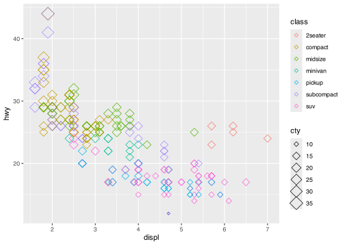

ggplot(data = <DATA>) +
<GEOM_FUNCTION>(mapping = aes(<MAPPINGS>))4 Basic Plotting
This chapter will teach you how to visualise your data using ggplot2. R has several systems for making graphs, but ggplot2 is the most elegant and versatile. The syntax behind ggplot2 looks complicated at first, but once you understand it, it’s incredibly powerful and can be used to visualise a wide range of data.
4.1 Structure
The main function in ggplot2 is ggplot() which is used to initialise a plot. A plot in ggplot2 is made up of multiple elements added to each other to create layers which each add something to the appearance of the chart. The basic template for a graph is as follows:
A geom function defines the way data and an aesthetic mapping is statistically transformed to create a plot. A plot can come in many forms, such as a bar graph, line and scatter graph, to name a few.
A ggplot object must contain
the data to be plotted as the first argument
how that data should be mapped to the different aspects of the plot, defined using
aes()(short for aesthetics).a geometric to draw the aesthetics with
ggplot works with layers, each added with the
+operator.Mappings are always added using the
aes()command, which can be inside theggplot()orgeom.
This might look confusing initially, so let’s show an example with one of the pre-loaded R datasets mpg by creating a scatter plot of displacement against hwy.
#Data to be plotted
ggplot(data = mpg, aes(x = displ, y = hwy))+
#The geometric to draw the aesthetics with (in this case a point geom)
#The aesthetic mapping; the x axis to displacement and the y to hmwy
geom_point()This is the basic structure of any ggplot chart, but there are plenty of things you can do to change the appearance and function of your charts within ggplot.
4.1.1 Exercise
10:00 - Use the iris dataset (another built-in dataset in R) to create a simple scatter (geom_point) chart, plotting Sepal.Length as the x axis and Sepal.Width as the y
3.1.1. Solution
ggplot(data = iris, aes(x = Sepal.Length, y = Sepal.Width)) +
geom_point()4.2 Types of Geom Functions
You aren’t just limited to scatter plots; there are lots of geoms available in ggplot - the best resource for choosing an appropriate geom is the cheat sheet. This can be found at https://github.com/rstudio/cheatsheets/blob/main/data-visualization-2.1.pdf
The most commonly used geoms are:
| Geom Function | Description |
|---|---|
| geom_bar | Bar chart |
| geom_point | Scatter chart |
| geom_line | Line graph |
| geom_histogram | Histogram |
| geom_boxplot | Box and whisker plot |
| geom_smooth | Line of best fit style overlay |
You can also add multiple geoms to a single plot, for example you can add a smoothed line to the scatter plot you have already created using geom_smooth. You can either define the aes in each of the geom calls if they are different for each layer, or define them in the initial ggplot call if they are consistent across all layers.
#Aes defined in ggplot calll
ggplot(data = mpg, aes(x = displ, y = hwy))+
geom_point() + #Add a + sign
geom_smooth()#Include a smoothed line4.2.1 Exercise
05:00 - Use the geom_smooth aesthetic to add a smoothed line to your scatter plot.
3.2.1. Solution
ggplot(data = iris, aes(x = Sepal.Length, y = Sepal.Width)) +
geom_point() +
geom_smooth()
4.3 Adding different aesthetics
It’s normal that you will want to explore more than two variables within your datasets. You can do this by mapping those variables to different aspects of the chart in ggplot; things like colour, point shape, or line type.
For example, we could set the colour of the point to be determined by the vehicle class.
# Aesthetics
ggplot(data = mpg, aes(x = displ, y = hwy, colour = class))+
geom_point()ggplot does some clever things when deciding what colours to use - for factorial variables it will assign each factor a unique colour (as in the above example), whilst for continuous variables it will assign a colour scale.
# Here year is coloured as a continuous variable with a colour scale
ggplot(data = mpg, aes(x = displ, y = hwy, colour = year))+
geom_point()
# Here by setting year to a factor it is coloured as a discrete variable with a unique colour for each
ggplot(data = mpg, aes(x = displ, y = hwy, colour = factor(year)))+
geom_point()
There are a wide range of other aesthetics you can set to indicate different categories including:
- Point shape (shape)
- Line type (linetype)
- Size of points (size)
- Transparancy of points (alpha)
Applying multiple aesthetics should be used with caution though; indicating more than one variable using aesthetics can quickly make a chart difficult to read!
# A chart wit multiple aesthetics applied.
ggplot(data = mpg, aes(x = displ, y = hwy, colour = class, size = cty))+
geom_point(shape = 5)
You also don’t have to map aesthetics onto variables; you can specify them manually if you don’t want them to be related to a variable. To do this, you need to specify the colour, shape, linetype, etc outside of the aesthetic call. For example, you can define the colour of the points:
#Aesthetics related to variables are mapped inside the aes call
ggplot(data = mpg, aes(x = displ, y = hwy))+
#Aesthetics that are manually set are mapped outside the aes call
geom_point(colour = "orange")4.3.1 Exercise
10:00 - Map the colour aesthetic of your chart to correspond to the Species in the iris dataset.
- Manually map the shape of the geom_point to be type 3
3.3.1. Solution
ggplot(data = iris, aes(x = Sepal.Length, y = Sepal.Width, colour = Species)) +
geom_point(shape = 3) 
4.4 Adding Layers
This produces the basics of any ggplot2 chart, however it doesn’t always make the most attractive chart. To improve the appearance of the chart, the ggplot2 package has a wide range of functions which can be added to your basic chart to change everything from the legend, titles, or scales shown in the chart.
4.5 Scales
Changing the x and y axes can be done using the scale_x_ and scale_y_ group of functions. There is a different type of these functions for each different type of scale and axis, and you need to take care you use the right one in each case!
##For a continuous Y axis
ggplot(data, aes(x = x_axis, y = y_axis))+
scale_y_continuous()
##For dates on the X axis
ggplot(data, aes(x = x_axis, y = y_axis))+
scale_x_date()An example of using a percent scale:
# Scales
ggplot(data = mpg1, aes(x = displ, y = gallon_percent, colour = class))+
geom_point()+
#Set name for axis
scale_y_continuous(labels = scales::label_percent())
You can change a large number of aspects of both the appearance and function of the axes using these functions, including:
- Name on the axis
- Change the minimum and maximum values on the scale
- Set major and minor values on the scale
- Position of the axis
- Type-specific changes such as setting the appearance of dates or transforming to log scale
# Aesthetics
ggplot(data = mpg, aes(x = displ, y = hwy, colour = class))+
geom_point()+
#Set name for axis
scale_x_continuous(name = "displacement",
#Set min and max limits
limits = c(0,8))Check the arguments available for any scale function using ? in front of it in the console; e.g. ?scale_x_date
4.6 Changing colour palettes
If you don’t specify colours to use, ggplot will default to the (relatively ugly) standard palette. Luckily, there are loads of ways to easily choose more attractive colour options!
Note that when you are changing colours in a chart, there are two different options; colour is used for points and lines in charts, while fill is for the central fill colour in objects like bars. Make sure you use the right one when calling scale arguments!
Using scale_colour_brewer() or scale_fill_brewer() allows you to select from one of the ColorBrewer palettes; these are designed to be attractive, and many of them are colour-blind friendly.
#Chart using the standard colour brewer palette
ggplot(data = mpg, aes(x = displ, y = hwy, colour = class))+
geom_point()+
scale_colour_brewer()
Change the palette used with the palette argument:
#Chart using the Dark2 palette
ggplot(data = mpg, aes(x = displ, y = hwy, colour = class))+
geom_point()+
scale_colour_brewer(palette = "Dark2")
You can see the full range of palettes available with their names here:

You can also design your own custom palettes using either named colours or hex codes and pass them to your charts using the scale_*x*_manual functions:
#Chart using a custom defined palette
my_cols <- c("#DAF7A6", "#CCDC6D", "#FFC300", "#FF5733", "#C70039", "#900C3F", "#581845")
ggplot(data = mpg, aes(x = displ, y = hwy, colour = class))+
geom_point()+
scale_colour_manual(values = my_cols)4.6.1 Exercise
10:00 - Change the colour palette your chart uses to something you like better than the default! Use the scale_colour_brewer or scale_colour_manual to do this.
3.6.1. Solution
ggplot(data = iris, aes(x = Sepal.Length, y = Sepal.Width, colour = Species)) +
geom_point(shape = 3) +
scale_colour_brewer(palette = "Dark2")4.7 Facets
Faceting charts in R is a good way to produce multiple identical charts; this feature splits data by a provided variable and plots one value per chart. It is very useful when overlapping data is difficult to read. Using the facet_wrap() function, you can pass any variable to the first argument (prefacing it with ~), as well as specifying the row/column layout of the result
#Chart using the Dark2 palette
ggplot(data = mpg, aes(x = displ, y = hwy, colour = class))+
geom_point()+
#Facet by class
facet_wrap(~class)+
scale_colour_brewer(palette = "Dark2")
4.8 Titles
Labels and titles can be added without changing the axes using the labs command.
#Themes, titles, and multiple plots
ggplot(data = mpg, aes(x = class, y =..prop.., group = 1))+
geom_bar()+
labs(title = "Proportion of sample by class", x = "Class", y = "Proportion")4.9 Adding themes
Changing the theme is a quick and easy way to set many of the visual aspects of your charts, such as the appearance of grid lines, size of text, and position of the legends. You can change the theme to a number of presets:
plot <- ggplot(data = mpg, aes(x = displ, y = hwy, colour = class))+
geom_point()+
scale_colour_brewer(palette = "Dark2")
#Applying different themes
plot+theme_bw() plot+theme_classic() plot+theme_minimal() plot+theme_light()You can also make your own custom themes; plot are made up of four elements element_text, element_line, element_rect, and element_blank. Plots can be modified using these element commands. For example:
#You can also make your own custom themes
#
ugly.theme <-
theme(
text = element_text(colour ='orange', face ='bold'),
panel.grid.major = element_line(colour = "violet", linetype = "dashed"),
panel.grid.minor = element_blank(),
panel.background = element_rect(fill = 'black', colour = 'red')
)plot+ugly.theme4.9.1 Exercise
10:00 - Add one of the default themes to your chart to improve its appearance.
- Add a title and labels to your axes
3.9.1. Solution
ggplot(data = iris, aes(x = Sepal.Length, y = Sepal.Width, colour = Species)) +
geom_point() +
#Add title and labels to axes
labs(title = "Chart", x = "Sepal.Length", y = "Sepal.Width") +
scale_colour_brewer(palette = "Dark2") +
#Add in-built R theme
theme_bw() 4.10 Saving plots
Most of the time you will want to create plots directly into an R Markdown output, or a shiny app. However plots can also be saved as image (png) file:
‘Export’ button in RStudio viewer
ggsave(filename = “plotname.png”, plot = myplot) - saves the plot into your current working directory in R Studio. Can then be downloaded from the platform via ‘More’ -> ‘Export…’
4.10.1 Saving a plot with today’s date
Something that has been raised in this section is: what if I want to add today’s date in the filename when saving a plot? This can be useful for organising and tracking plots over time. To do this, you can use the Sys.Date() function in R, which returns the current date in YYYY-MM-DD format.
For example, if you wanted to save a plot with today’s date included in the filename, you could use:
ggsave(filename = paste0("plot_", Sys.Date(), ".png"), plot = myplot)This will save the plot myplot as a PNG file with a filename that includes the current date, like plot_2025-03-07.png, where Sys.Date() provides today’s date in the format YYYY-MM-DD. It’s a great way to ensure your plot files are uniquely named based on the date.
This is a good opportunity to take a 10-minute break away from the computer to refresh your mind, stretch, and reset before continuing onto Chapter 4 and 5.